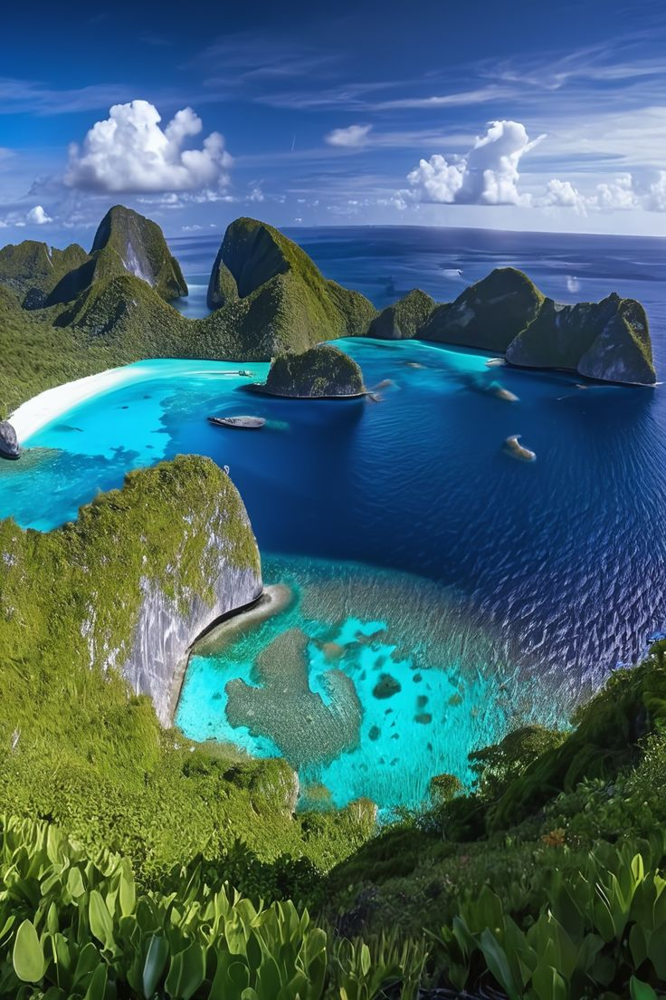
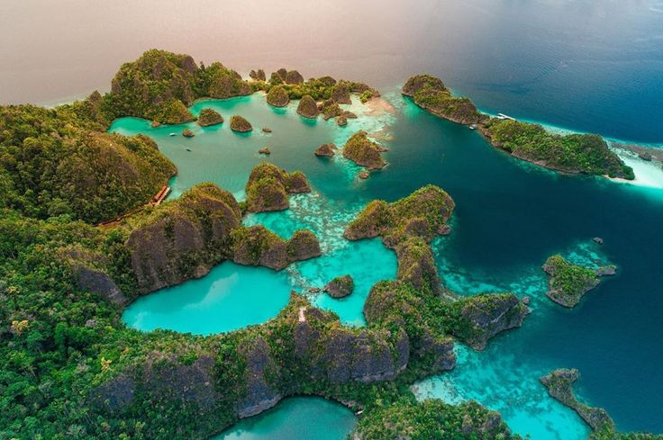
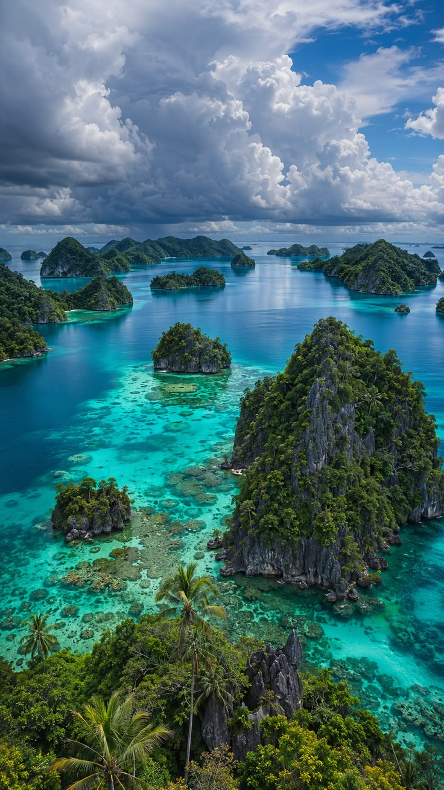
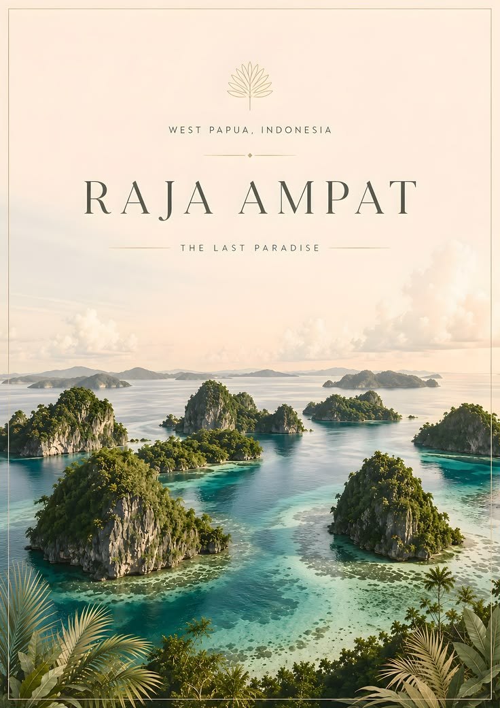
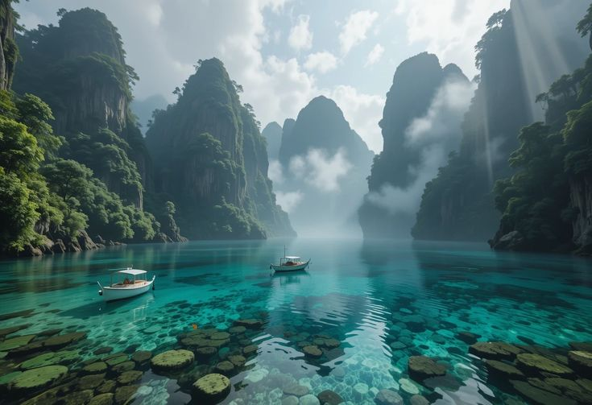
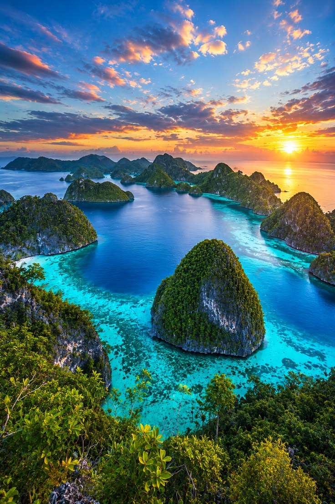

Piaynemo
Viewpoint over a field of limestone islets, one of Raja Ampat's most recognizable landscapes.

01 / Destinations
Delapan tempat untuk membaca Raja Ampat melalui bentuk karst, arus, desa pesisir dan dunia bawah laut.
Field guide
Raja Ampat terasa berbeda dari satu teluk ke teluk berikutnya. Karst Wayag memberi skala, Misool membuka dunia batu kapur purba, sementara desa dan titik selam membawa perjalanan lebih dekat pada kehidupan pesisir.
Editorial guide · destination names follow the project brief. Geographic context: Indonesia Travel.
The eight
Wayag
North Raja AmpatGugusan pulau karst yang ikonik, dibaca dari air dan ketinggian. Bentuk pulau kecil, laguna dan horizon menciptakan lanskap yang terasa hampir abstrak.
Misool
South Raja AmpatDi selatan, karst bertemu teluk dan perairan yang lebih terlindung. Misool cocok dibaca perlahan, dengan ruang untuk menyelam, menjelajah laguna dan memperhatikan bentuk batu kapur.
Further north, further below

Viewpoint over a field of limestone islets, one of Raja Ampat's most recognizable landscapes.

A reef-edge destination associated with the exceptional marine diversity of Raja Ampat.
Explore diving
A pelagic encounter site where conditions, current and marine etiquette shape the experience.
Meet the marine life
A coastal community setting where the journey can slow down around village life and water.
Meet the community
A place associated with local birdlife stories and the wider forest-to-sea character of Raja Ampat.
Read the culture guideA maze-like water route between limestone formations, suited to slow exploration by boat.
Field note / Leave room
Perjalanan yang baik di Raja Ampat tidak hanya mengumpulkan titik. Ia memberi waktu untuk air, komunitas dan alam berbicara.
Build your journey